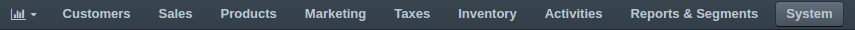
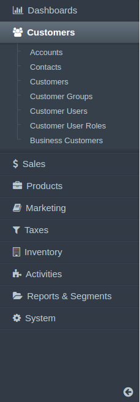
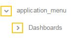

Menus Configuration¶
In this section you will learn how to configure the menus globally, per organization/website, or for your own use only. You also will learn the various kinds of menus in OroCommerce and OroCRM management console and OroCommerce front store.
Menu Types Overview¶
OroCRM and OroCommerce Management Console Menus¶
Navigation Bar¶
The application_menu is the main menu of the Management Console in Oro application. It resides on the top of every application page and you can use it to navigate through Oro application. Subject to configuration, it may be displayed horizontally or vertically. To toggle the way it is displayed, navigate to the System > Configuration section using the main menu, and open System configuration > General Setup > Display Settings in the panel to the left. In the Navigation Bar section, unselect the Use Default option and select the Top or Left position.
In the latter case, the menu items are displayed as icons. For more information, see Main Menu.
In a top position, Application Menu (Navigation Bar) looks like a top menu with a drop-down sub-menus that expand once you hover over the parent item:
In a left position, Application Menu (Navigation Bar) may be collapsed into the icon bar:

or expanded for visible labels and sub-menu items:
Shortcuts¶
You can find shortcuts menu in the top panel of the application, next to the organization name.

It helps you pin the frequently used actions and have them handy. You can launch an action by clicking it in the dynamically generated Most Used Actions list. This list is updated as you are using the system, and will initially contain the actions that you use the most.
To access other shortcuts, click See the full list to see complete list of shortcut items or use search: start typing the name of a related entity or an action to choose from a list of matching items.
User Menu¶
In Management Console, user can access their profile configuration, emails, tasks and events via a usermenu (by clicking on your name in the upper-right corner of the application).

Calendar Menu¶
A calendar_menu is a service menu that is used on the My Calendar page and helps to change the displayed calendar color, hide or remove a calendar.

OroCommerce Front Store Menus¶

Quick Access¶
A commerce_quick_access menu provides quick access to the most frequent or important actions.

Navigation Bar¶
A commerce_main_menu defines the static content of the OroCommerce Front Store main menu. The leading part of the menu is generated based on the structure of the website web catalog or master catalog. The trailing part is composed of the commerce_main_menu items.

Footer Links¶
A commerce_footer_links defines the structure of the links in the OroCommerce website page footer.


Menu Management¶
On various configuration levels, the menu and frontend menu list looks the same and the flow for customizing any menu is similar.
On the menu list you can see the menus available for review or customization.

Generic Principles¶
A menu may be multi-level like, for example, a default OroCRM and OroCommerce Management Console main menu. The child menu items are nested under parent menu items (e.g. Accounts, etc are nested under the Customers).

Menu items on the same level of hierarchy may be visually separated by a divider that looks like a horizontal line.
Dividers help you logically organize menu items.
Note
Some menus do not support displaying dividers (on a particular level in the tree, or in general). For example, if you add a divider to the top level of OroCRM and OroCommerce Management Console main menu (application_menu), the divider is not displayed.
Edit a Menu¶
To view and edit menu contents, click on the menu name or on the View icon in the corresponding row of the menu list.
On the page that opens, the menu item tree is shown in the left panel. Center is reserved for the menu item configuration.
Toggle the Menu Tree View¶
Hide / Show the Menu Tree¶
To minimize or maximize the left menu panel, click a double arrow in the upper-right corner of the panel.

Expand / Collapse a Menu Tree¶
To expand / collapse a parent menu item, click an arrow in front of it.
To expand / collapse all menu items, click the ellipses dropdown menu in the upper-right corner of the left panel and click Expand All or Collapse All.

Rearrange Menu Items / Dividers¶
You can change the position of an item / divider in a menu by dragging and dropping it in the left panel. You can change the order of menu items at the same level as well as move an item / divider to the higher or lower level.
When you drag-and-drop items, pay attention to the arrow that shows where the item will be placed:
If an arrow points to the place between items, that is where the moved item will be placed.

If and arrow appears in front of a menu item, then the moved item will become a child of the item that the arrow points to.

Add a Menu Item¶
In the left panel, click a menu item which will be parent for the menu item that you create.
Click the Create dropdown in the upper-right corner of the page and click Create Menu Item on the list.

The created menu item will appear as the last one on the list of children of the same parent item. You can move it to the position that you need, as described in the Rearrange Menu Items / Dividers action description.
In the right part of the page, specify the following information:
Title—A name for the menu item. This is how this menu item will be represented in the menu.
Click the Translations icon to provide spelling for different languages. Click the Default Language icon to return to the single-language view.

URI—An web address of the page or resource that this menu item opens.
You can specify an absolute URI or one relative to the application URI (as specified in Application Settings in System Configuration).
If this menu item serves as a non-clickable parent that does not link itself to any resource (like Customers in the default main menu), type #.
Icon—From the list, select the icon that will denote the menu item.
Note
Sometimes menus (or menu levels) may not be supposed to display icons. For example, icons added to the first level of the main menu (application_menu) are displayed only when this menu is set to appear on the left.
Description—Type a short but meaningful description of the menu item.
Click the Translations icon to provide spelling for different languages. Click the Default Language icon to return to the single-language view.

Click Save to save your changes. If you wish to start creating another menu item right away, click Save and New in the upper-right corner of the page.
Important
You need to reload the page to see changes.
Add a Divider¶
- In the left panel, click a menu item which will be parent for the menu divider that you create.
- Click the Create dropdown in the upper-right corner of the page and click Create Divider on the list.

The created divider will appear as the last one on the list of children of the same parent item. You can move it to the position that you need, as described in the Rearrange Menu Items / Dividers action description.
Important
You need to reload the page to see changes.
Note
Some menus (or some menu levels) cannot display dividers. For example, if you add a divider to the first level of the main menu (application_menu), this divider will not be displayed.
Find a Menu Item¶
To quickly find a menu item, enter its name into the search field and click the Search icon, or press Enter.